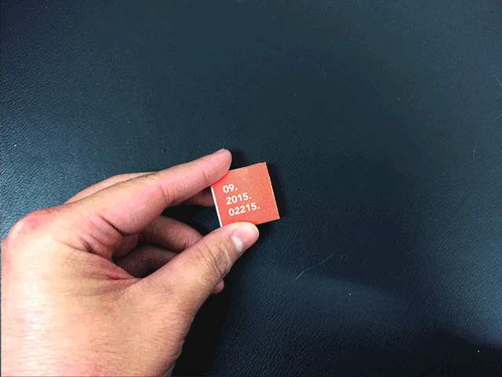

Frustrated with the inconsistency of Boston's weather as we transitioned from Summer to Fall, I visualized the entirety of September 2015's highs and lows everyday into a compact accordion book. The comparative timeline nature of the format allows for a better overview understanding of the phenomenon experienced day in and day out in Boston.
The scale shifts from red to purple starting at 90+ degrees and moving down in 10 degree increments.